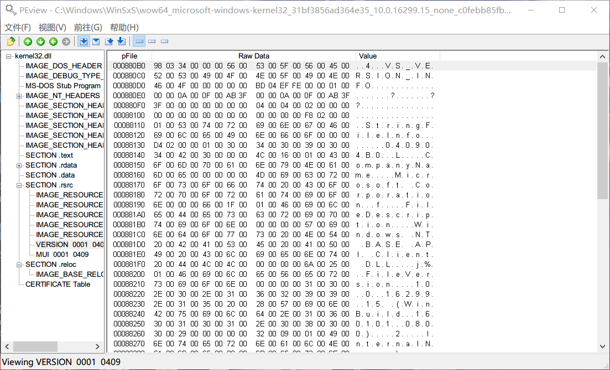
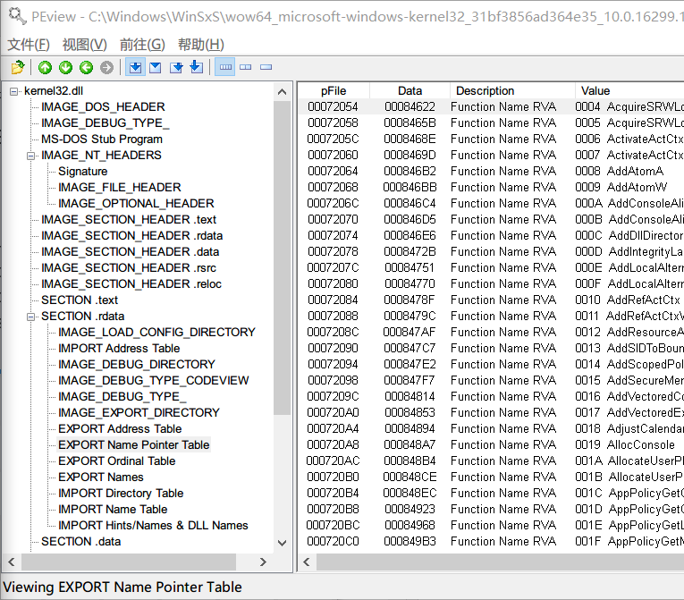
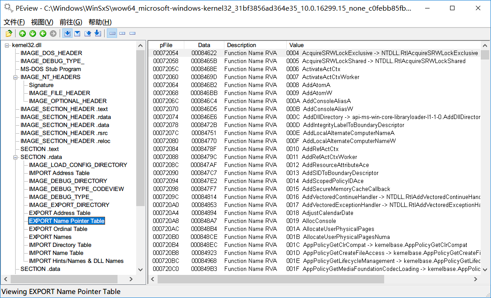
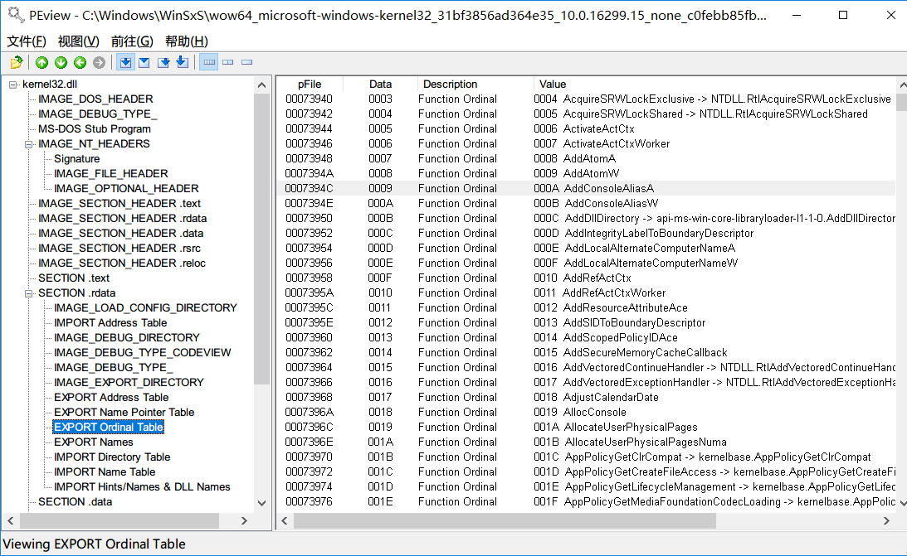
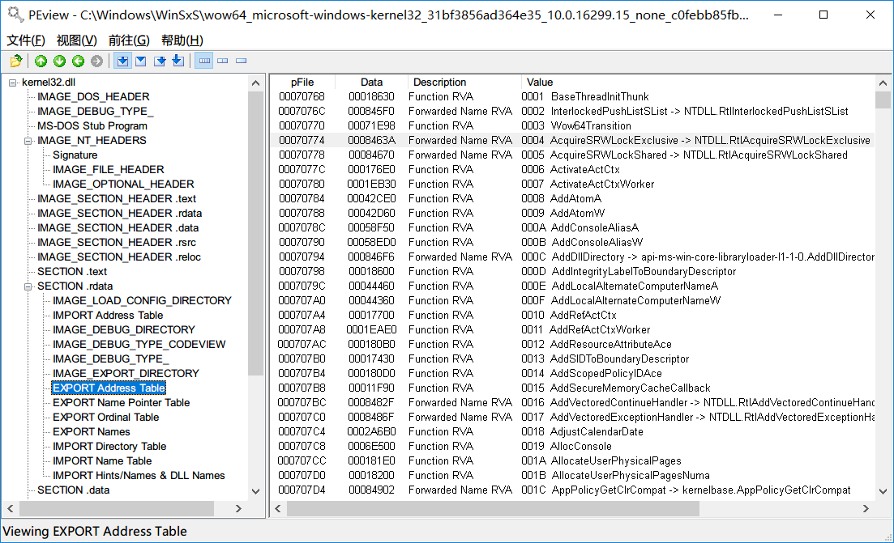
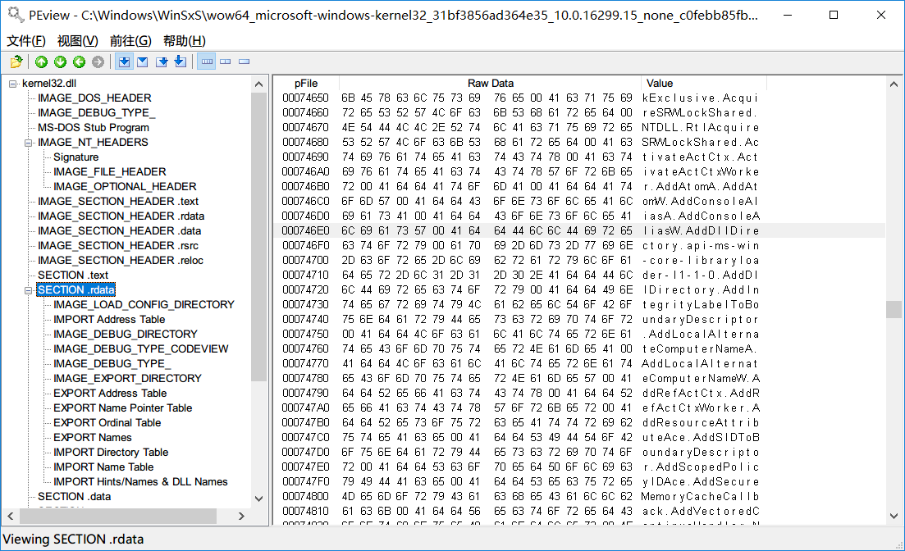
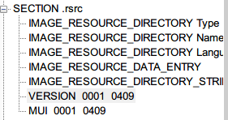
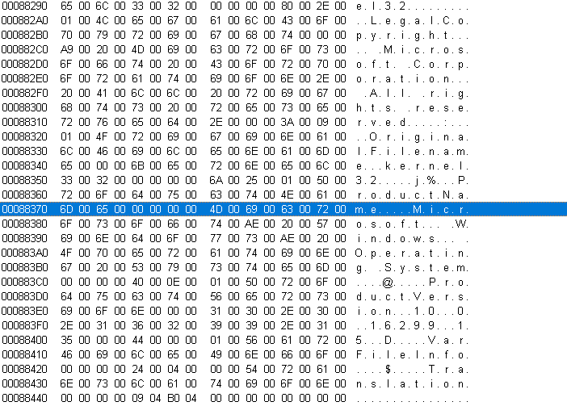

免责声明:我在写这篇文章的时候 对于编译 链接的具体过程并不能说是了解 只能将自己现在的理解写出来 有错概不负责 毕竟是我的博客嘛233
DLL导出API时的相关过程
利用PEview,载入一个很常见的DLL:kernel32.dll 让我们看一下其中的东西

这里我们可以看出来 其实DLL本身也是遵循PE结构的(废话) 所以DLL和EXE本质上其实可以算一个东西的233 之所以分开来 具体原因我也不懂…(陷入沉思)
之前的一篇文章 我们介绍了导入表 所谓导入表 就是在程序加载时 将加载后的API地址填入IAT中 从而实现跳转 那么这个地址是如何被确定的呢？跟导入一样 这里就要有一个导出的概念 可以想象 DLL中应该有具体的表单 里面存放着各个API的地址 然后通过一些索引可以找到相对应的API地址 下面就来具体解释这样的一个方法
在PEview中 我们可以看见关于导出的一个结构体 IMAGE_EXPORT_TABLE 从这里我们可以了解到导出的一些相关内容

在这个结构体中 可以很清楚的发现里面记载了导出的函数的个数，函数名的个数 以及与函数相关的一些东西:Address，Name，Ordinal 这些就是我们索引时所需要的参数
同时我们也可以看到在左边的引导栏中也有EXPORT_XXXX字样 和这些索引是可以一一对应的
这里我们可以先看一下这些EXPORT_XXXX的数据
ENPT:

EOT:

EAT:

ENPT所指向的东西:

具体的作用会在下面展示 放在这里帮助后面理解
还记得导入表中有一个叫做INT的表单吗 在INT中 每一个单元都指向一个结构体 结构体由一个莫名其妙的"数字"以及函数名称组成 这就是在寻找API的时候所需要的参数(其实二者都可以单独寻找到API的地址 但是通过数字索引需要一些条件 这里先从通过名字寻找说起)
- ENPT中 我们可以看见 里面所有的数据都是指针 指向函数名 还有就是这里的函数名是根据ASCII顺序排列的 所以就可以通过二分法 找到相同函数名 并得到其的index
- 拿到index后 再进入EOT中 通过刚才的index 得到这个index所对应的值
- 将从EOT中得到的值作为数组下标 从EAT中取出相对应的值 这个值就是API在DLL中的RVA了
上面这些就是通过名字来找到地址的方法了 这个过程兴许比较生涩难懂 需要用心琢磨一遍才能记住 但我在理解的过程中就产生了这样一个问题:既然函数名是作为找到index 那为什么不直接将函数名和函数地址对应起来 而还需要一个ordinal呢？
答:因为有的API没有名字
那为什么有的API没有名字呢？
答:历史原因 毕竟存储一个数值和一串字符串需要的空间不是一个量级的 在以前内存资源辣么紧张…是吧 对于保证兼容性来说也是很吼的 于是这样一个过程就遗留了下来
那么这样不是会拖慢效率吗？
你能想到的微软也想到啦！这时候用"数字"(index)寻找API地址的方法就呼之欲出了 直接通过数字找到下标 拿到fla…呸 RVA 是不是非常的快！
但很不幸 这是有条件的
首先我们可以想到这样一个问题 在可执行文件中 IAT的那些数值 例如name,index这些数值 是什么时候确定的呢？
我认为 应该是在生成可执行文件进行链接的时候 将DLL中的一些参数直接写入进导入相关的表中 但具体过程我也不太清楚了hh
那么这里就会牵扯到一个问题 不同环境下 DLL的版本号是可能不同的！而可执行文件中的内容在第一次生成后就确定了
假如在更新了以后 DLL中的API增添/减少了 那么可以想象 其对应的index是会被改变的 那么直接通过数组下标得到函数地址的方法就不可行了 这时候就得乖乖的通过名称来查找了
再往外拓展 我们自己也可以写DLL 所以不仅仅是针对系统的DLL导出API 当我们编写函数并将其导出的时候 过程应该也是这样的 这能牵扯出什么问题呢？希望如果你在读这个文章时可以思考一下
那还有一个问题 程序是如何知道加载的DLL的版本是否相同呢？
这个…
我也不太清楚 毕竟方法可能有很多 如可能存储了hash值用来比较？在rsrc段中我们可以看见一个东西

而内容是这样的

猜测是跟这个有关系 具体是如何比对的 希望有大手子知道后可以联系我告诉我怎么做 但这不影响我们对于EAT基本的了解 所以就不做深究了
写在最后
发一个牢骚
啥是windows安全啊 windows的坑真的多 要知道的细节又多又长 但我不知道现在怎么向安全靠拢啊(雾
万物皆pwn
写完这篇文章后突然想到一个问题 导入函数绑定这个东西好像没提到？我好像也没见到这个 可能是要手动用工具绑定？
好久没做题了re题 但是要学的东西还有好多 这两天抽空做一次吧 不然都忘了自己是bin选手了
所以啥是windows安全啊…